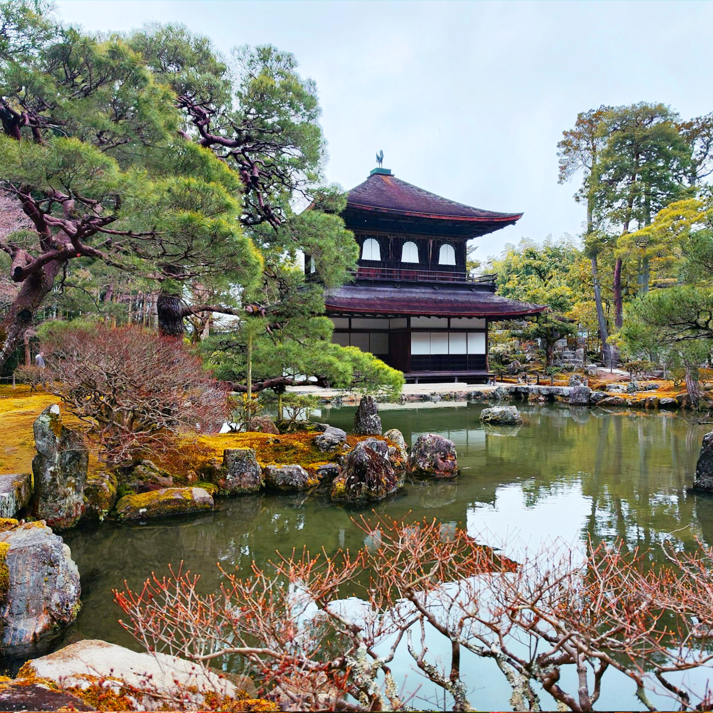

Ginkaku-ji (Silver Pavilion) – Kyoto’s Zen Garden & Historic Temple

Located in the eastern hills of Kyoto, Ginkaku-ji (銀閣寺), officially known as the Jishō-ji Temple, stands as a stunning testament to Japan’s Muromachi period aesthetic and Zen Buddhist philosophy. Despite its name, the “Silver Pavilion” was never coated in silver, yet it remains one of Kyoto’s most iconic and serene landmarks.
Historical and Cultural Significance
Built in 1482 by Ashikaga Yoshimasa, the eighth shogun of the Ashikaga shogunate, Ginkaku-ji was intended as a retirement villa and later converted into a Zen temple. It exemplifies the refined simplicity and natural beauty prized in wabi-sabi — the Japanese aesthetic of imperfection and transience — deeply influencing Japanese culture, art, and garden design.
Exquisite Zen Gardens and Architecture
The temple grounds feature meticulously maintained strolling gardens, a dry sand garden called “The Sea of Silver Sand” with a famous sand cone, and a tranquil moss garden. These landscapes provide a meditative atmosphere for visitors, embodying Zen principles of harmony and balance. The two-story pavilion itself showcases elegant wooden architecture blending seamlessly with nature.
UNESCO World Heritage Site
Ginkaku-ji is part of the Historic Monuments of Ancient Kyoto, designated as a UNESCO World Heritage Site. Its preservation offers visitors a glimpse into Japan’s feudal era culture, Zen Buddhism, and traditional artistry, making it a must-visit for those seeking authentic Japanese history and spirituality.
Visitor Information
- 🌸 Location: 2 Ginkakujicho, Sakyo Ward, Kyoto, Japan
- 🌸 Hours: 8:30 AM – 5:00 PM (Last entry 4:30 PM)
- � Admission: Approximately 500 JPY
- 🌸 Access: About a 10-minute walk from Kyoto’s Ginkaku-ji-michi bus stop or a 30-minute walk from Kyoto Station
Why Visit Ginkaku-ji?
Whether you’re a lover of Japanese history, Zen Buddhism, or serene natural beauty, Ginkaku-ji offers an immersive experience into Japan’s cultural soul. Its tranquil gardens, timeless architecture, and contemplative atmosphere invite you to slow down and appreciate the subtle elegance of traditional Japan.
Tags: Ginkaku-ji, Silver Pavilion, Kyoto temples, Zen gardens, Japanese culture, UNESCO Kyoto, Japanese architecture, Muromachi period, Japan sightseeing, Zen Buddhism
Planning to visit Ginkaku-ji?
To get the most immersive and insightful experience, we recommend booking a certified local private guide from our team. All our guides are licensed professionals officially recognized by the Japanese government, offering personalized tours tailored to your interests. Please contact your selected guide in advance to confirm availability and get expert assistance for your trip.